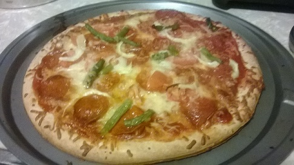

My full name is Julio César Carrera. Currently 25 years old and graduated from Northeastern Illinois University(NEIU) in Chicago which is where I still live. I earned a Bachelor's in Computer Science. At NEIU my specific two Computer Science concentrations were Technical Programming, and Information Technology. I also have a Minor in Communications because I figured that I wouldn't hurt, plus communication will be very important wherever I go, and I was also able to fit this Minor with my Computer Science courses.
To be honest I did not know that I wanted to major in CS when I started at NEIU. I had no idea what I wanted to do, but I did know that I was good with computers and liked being challenged with new things. I like to be always learning and finding how the new can be a total game-changer to the old. I tried out Programming I together with Discrete Mathematics and I loved it. After that I started to think differently about how software world works. I would try to point out where loops were used, what kind of data structure a system might have and so on. I would see microwave ovens, mobile phones, street lights, and anything electronic in a curious manner. Experiencing new subjects about software programming was what kept me entertained at the end of my journey at NEIU. The last two semesters at NEIU I was in The Dean's list for Computer Science.
I really enjoyed creating websites, applications, and other smaller pieces of software after the introductory programming courses. My most challenging course was my Mobile Applications class. But it is also the course where I learned the most. The first day of class our professor told us that if we were not willing to put in AT LEAST 10-15 hours a week of study time outside of class, we should not expect to pass it. At first I was a little bit intimidated, but I did my best going over the material and visiting the professor several times along with other classmates. I really enjoyed those study sessions talking with others on where we would get stuck and trying to troubleshoot our applications. I spent a lot of time on that class and it was worth it because I learned so much, got an A, and made friends in the process.
 In addition to programming, I like to play the guitar. I have two acoustic ones, and three electrical. When I was around 14 I played Guitar Hero with my sister and got bored of all available songs. I wanted to play my own stuff and experiment with all a guitar offers. I learned by myself after my parents gifted me my first guitar at 16 years old. I also like making pizzas. This began when I would have super long study sessions and there were no open food places late at night. I began experimenting putting pizzas with different cooking methods and ingredients. I also love driving either really early or late at night when the traffic is almost non-existent. It is very de-stressing for me and a good alternative to exercising.